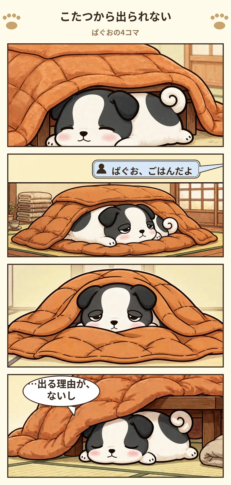

こたつに入ったが最後、出てこられないぱぐお。「ぱぐお、ごはんだよ」と呼ばれても、答えは「…出る理由が、ないし」。ごはんの誘惑とこたつの魔力の間で揺れる、冬のぱぐおの話。
「ぱぐおの4コマ」は、パグのキャラクター「ぱぐお」のゆるい日常を描く4コマ漫画。ねむくて、だらだらで、素直になれない。でも、しっぽだけは正直。そんな ぱぐお と飼い主の何気ない毎日を、1話ずつ届けているよ。このページは、ホームページ「ぱぐのしっぽ」の4コマ図書館にある最終確定版だよ。
セリフ（テキスト版）
画像の中のセリフを、文字でも読めるように書き起こしたものだよ。
2コマ目
飼い主：ぱぐお、ごはんだよ
4コマ目
ぱぐお：…出る理由が、ないし
飼い主のひとこと（図書館だけの裏話）
こたつに入ったが最後、出てこない。冬の風物詩です。ごはんに呼ばれても出ない、というのは飼い主的には少し困るのですが、その頑固さも含めて冬のぱぐおです。
この話の感想（0件）
感想を書いてもらえると、ぱぐおのしっぽが揺れます。本文だけ書けば、そのまま表示されます。個人情報は書かないでください。
ほかの話も読む


読み物もあるよ。ぱぐおの紹介や、パグの豆知識のコラム。
コラムを読む